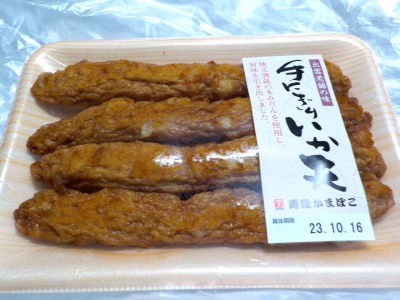
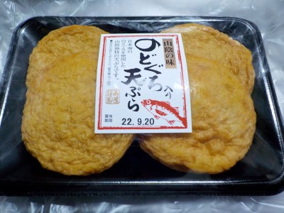
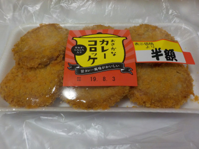

寿隆蒲鉾のにぎりイカ天
2023/10/11

噛むとジュワッと味が出てくる蒲鉾でした。
味付けがしっかりしてあって美味しかったです。ご飯のおかずにいいですね。
島根県松江市東出雲町揖屋3548-2
2023/10/11

噛むとジュワッと味が出てくる蒲鉾でした。
味付けがしっかりしてあって美味しかったです。ご飯のおかずにいいですね。
2022/09/15

のどぐろってなんとなく高級食材な感じがしますね。そんな「のどぐろ」が入っていると思うとなんとなく美味しそうな感じがします。
原材料的にはトビウオ、たら、いとよりの次に表示されているので、たぶんそんなには入っていないと思います。
味も特にわかりませんでした。普通に美味しい天ぷらでした。
味の違いが分かる人は是非食べてみて下さい。
2019/08/01
平べったいのでカレー蒲鉾をコロッケ風に揚げたものかな？って思って買いました。
おつまみに良さそうです。

蒲鉾にじゃがいもが入っていたので、思っていたよりコロッケ風でした。
おいしいおつまみでした。